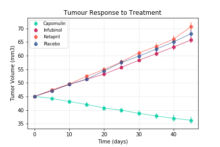
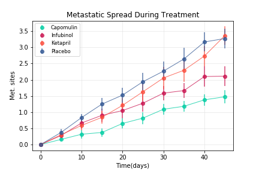
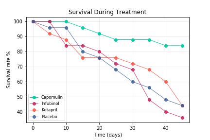
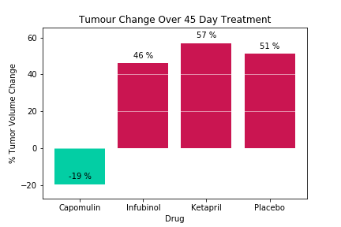

Pymaceuticals Analysis
In this study, 250 mice were treated through a variety of drug regimes over the course of 45 days. Their physiological responses were then monitored over the course of that time. This report shows the analysis of the data showing how four treatments (Capomulin, Infubinol, Ketapril, and Placebo) compare.
This graph shows how the tumors changed in volume over time when different treatments were administered. Under the Capomulin treatment the size of the tumors shrank however under the Infubinol and Ketapril treatments the tumors continued to grow. In fact the tomors grew more under the Ketapril treatment than the placebo treatment.

The metastatic spread of the malignant tumors was also monitored throughout the trial. Overall the tumors treated with Capomulin showed less metastatic spread than the other treatments. The tumors treated with the placebo had an average of 3.37 metastatic sites after 45 days whereas the tumors treated with Capomulin had on average only 1.48.

The survival rate of the mice in the study can be seen on the graph here. Infubinol had the worst survival rate with only 36% of the mice surviving the entirety of the trial. This was a worse survival rate than the mice treated with the placebo (44%). The mice treated with the Capomulin treatment had the best survival rate at 84%.

Between the four treatments, (Capomulin, Infubinol, Ketapril, and Placebo) only Capomulin had a reduction in tumor size over the course of the study.
Home